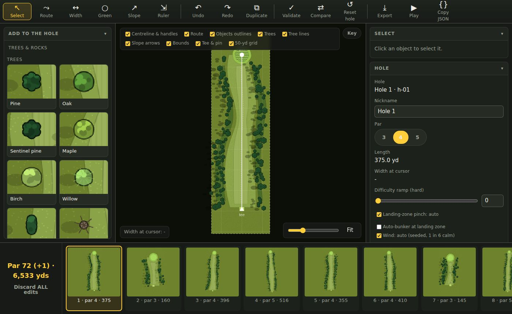
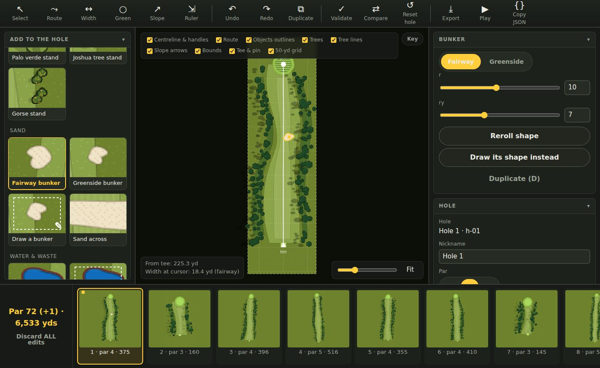
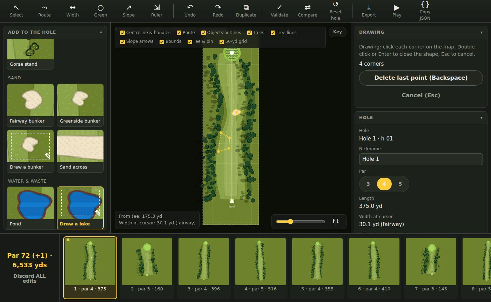
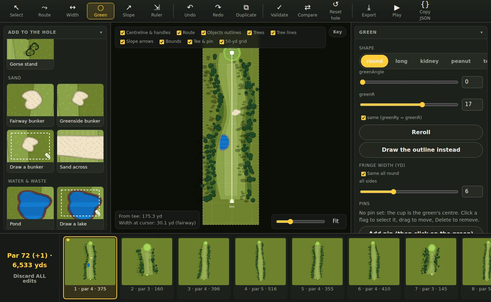
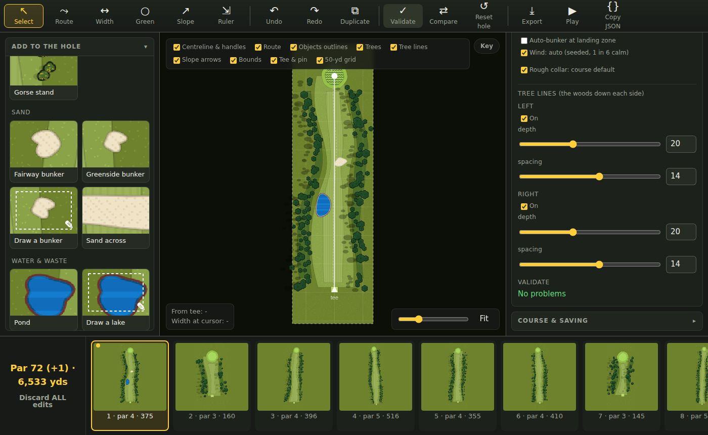
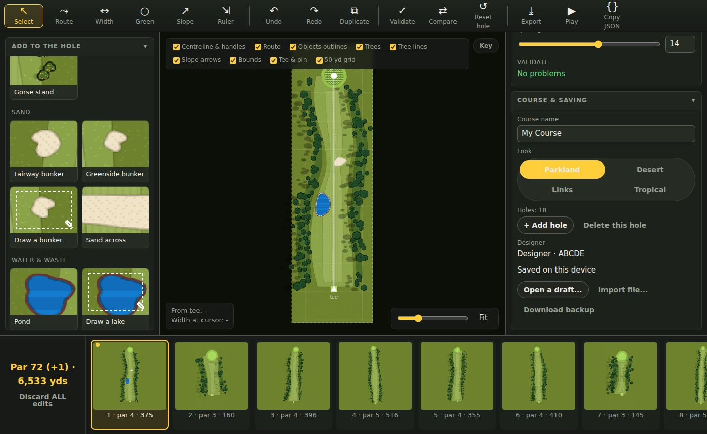

Course Creator: how it works
Design a golf course hole by hole, try it in the real game, and send it in.
Start here
- Your player code. If you use the Game Hub on this computer, the editor already knows who you are. If not, open Course & saving on the right and type your 5-letter code (it is on your Game Hub profile page). Your work saves under that code.
- Name your course in Course & saving.
- Pick a look: Parkland, Desert, Links (seaside, gorse), Tropical (palms, lagoons), Mountain (spruce, glacial water) or Swamp (willows, murky water). You can change it any time; it recolours every hole.
- You start with 18 plain holes (par 72, no hazards). Change them however you like. You can add holes or delete them (at least three stay).
- Download a backup now and then (Course & saving). It is one small file with the whole course in it.
The screen
Tools along the top. Things to add on the left. The hole in the middle. Settings for whatever you picked on the right. Every hole along the bottom: click one to work on it.

The checkboxes over the map hide or show layers (trees, outlines, the grid). Key shows what each colour means. Fit or F shows the whole hole.
Adding things
Click a picture on the left, then click the hole where you want it. It lands there and is selected, so its settings appear on the right (size, shape, type). Drag it to move it. Delete removes it. D makes a copy.

| Trees & rocks | One tree, or a stand (a small group). Rocks and logs too. The current look's own trees are listed first. |
| Sand | Fairway and greenside bunkers, one you draw yourself, and Sand across (a band right across the hole). |
| Water & waste | Pond, draw a lake, swamp, creek across, waste across. Water costs a stroke and a drop. Swamp does not: the ball just stops dead and comes out at half power. |
| Around the green | Ready-made hazards hugging the green (front sand, water left, trees behind...). Click to switch each one on or off. |
| Decor | Bench, sign, flagpole, cart path. Looks only: they never affect a shot. |
| Structures | Power line: click each pole, then Enter. The wire only stops a ball flying at wire height (about 10 yards up, you can change it). A high shot goes over, a low one goes under. A ball that hits it drops there, no penalty. |
Drawing your own shapes
The pictures with a dotted box and a pencil (Draw a bunker, Draw a lake, Draw a swamp, cart path) let you draw any shape. Click each corner around the edge. Enter or a double-click closes it. Backspace takes back the last corner, Esc gives up. The corners are smoothed into a natural edge.

Afterwards, select it and drag the white squares to reshape it, or drag the middle to move it. A shape must not cross over itself.
The tools along the top
↖ Select V
Click anything to select it, drag to move, Delete to remove.
⤳ Route R
The line the hole follows. Drag the white dots to bend it. Drag the flag end to make the hole longer or shorter. Double-click the line to add a bend point. Dogleg left/right and Straighten are on the right.
↔ Width W
Drag the dots on the fairway edges to make it wider or narrower at that spot. Double-click an edge to add a dot. The slider on the right widens the whole fairway at once.
○ Green G
Shape, size and angle of the green, the fringe around it, and the pins. See The green.
↗ Slope S
How the green breaks. Pick a ready-made slope, or Paint it: drag inside a square on the green in the downhill direction. A click without dragging flattens that square.
⇲ Ruler M
Click two points to see the distance in yards. The box under the map always shows how far the pointer is from the tee.
↶ ↷ Undo / Redo
Ctrl+Z and Ctrl+Y. Undo goes back through everything.
✓ Validate · ⇄ Compare · ↺ Reset
Validate checks the hole (see Testing). Compare shows the hole as it started beside how it is now. Reset hole puts this one hole back to how it started.
The green
Pick a shape (round, long, kidney, peanut, teardrop, clover), then size and angle. Reroll gives a different version of the same shape. Or press Draw the outline instead and draw it corner by corner.
Fringe is the short collar round the green; it can be different on each side. Pins: press Add pin and click on the green. Add several and the game picks one at random each round.

Trees: how tall is tall?
A ball can fly over a tree if it is high enough when it gets there. A tree's height decides that. Some rough guides:
| Bush, log, gorse | 2 to 3 yards: everything flies it, but a putt or a low runner is stopped. |
| Palo verde | 8 yards: a normal iron clears it from a sensible distance. |
| Oak, maple, birch | 12 to 14 yards: needs height; a punch shot goes around, not over. |
| Pine, palm, cypress | 16 to 22 yards: hard to fly unless you are well back. |
| Sentinel pine, rocks, power poles | 40 yards: nothing in the bag flies these. Go around. |
Select a tree to change its size and height. The Tree lines (the woods down each side) are in the Hole panel: on/off, how deep, how close together.
Testing a hole
Validate checks the hole and lists anything wrong in the Hole panel. Click a message and the map jumps to the spot. Common ones:
| crosses itself | A drawn shape's edge crosses over its own edge. Move a corner so it doesn't. |
| outside bounds | Something is too far from the hole. Drag it in. |
| pin is not inside the green | A pin sits off the green. Drag it back on, or make the green bigger. |
| tee is not inside a tee surface | Something is covering the tee. Move it. |

▶ Play opens the real game on your course in a new tab, so you can play the holes you have made. Nothing you score there is recorded.
Saving and sending
Every change saves by itself, on this computer and to the cloud under your player code. The Course & saving panel says Saved to cloud when it has. Open a draft... reopens any saved course.

- Download backup: a file with the whole course. Keep one. Import file... loads it back.
- Export (Ctrl+E): the finished course file, named after your course.
- When you are finished, tell Matt. He opens your draft from the cloud, and your course gets added to the game.
Keys
| V R W G S M | Select, Route, Width, Green, Slope, Ruler |
| B H T C K L | Bunker, Water, Tree, Across, Decor, Power line |
| Delete · D | Remove the selected thing · copy it |
| Ctrl+Z · Ctrl+Y | Undo · redo |
| Enter · Backspace · Esc | While drawing: finish · take back a corner · give up |
| [ ] | Previous / next hole |
| F · + - | Show the whole hole · zoom in / out |
| Ctrl+E | Export |